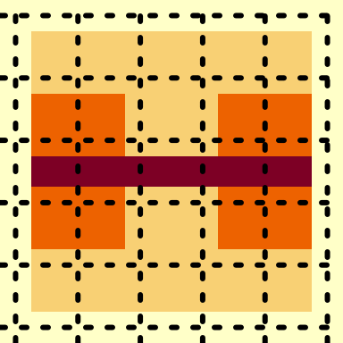
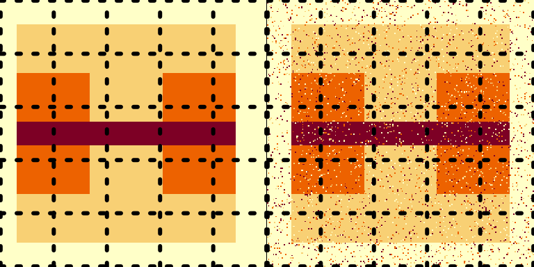

vignettes/two-dimensional-example.Rmd
two-dimensional-example.Rmdlibrary(catsim)
catsim
The Categorial Structural Similarity Image Metric, or CatSIM, provides a similarity metric for binary or multicategory images or maps after the style of MS-SSIM. It attempts to assess similiarity between two images that accounts for the similiarity between structures or regions of the image rather than a per-pixel discrepancy, ideally in a way which is similar to human assessments of similarity.
It works by assessing similarity within a a sliding window across the image, then downsampling and doing the same on different scales, and then combining the ratings together. The first scale is the entire image, the second scale is the image shrunk down to half its size, and so on.
To demonstrate how it works, first we construct a simple multicategory image and blow it up to a larger size. The grid lines are added for reference. This is our “ground truth” image.
multfactor <- 20 onesmat <- matrix(1, multfactor, multfactor) exmat <- matrix(0, 12, 12) exmat[2:10, c(2, 3, 9, 10)] <- 1 exmat[2:10, c(4, 5, 7, 8)] <- 2 exmat[5:7, 2:10] <- 1 exmat[2:10, c(6)] <- 3 image(exmat[11:1, 1:11]) grid(col = "black", lwd = 3)

bigmat <- exmat %x% onesmat
Next, we construct two distorted versions. The first simply shifts the central portion of the image over six pixels. Then, we compute the percentage of pixels that disagree with the baseline image and create a second distorted image by adding salt-and-pepper noise at that rate. Again, grid lines are added only for reference.
set.seed(20200323) shift <- 6 # we are shifting horizontally by six pixels basemat <- bigmat[1:(11 * multfactor), 1:(11 * multfactor)] shiftmat <- bigmat[(1 + shift) : (11 * multfactor + shift), 1: (11 * multfactor)] ### Here we have shifted the matrix slightly par(mfrow = c(1, 2)) image(shiftmat) grid(col = "black", lwd = 3) ### computing the error rate acc <- mean(basemat == shiftmat) errmat <- (matrix(sample(0:3, 121 * (multfactor^2), replace = TRUE, prob = c(acc, rep((1 - acc) / 3, 3))), (11 * multfactor), (11 * multfactor)) + basemat) %% 4 ### here we have made an image that matches its accuracy with salt and pepper noise image(errmat) grid(col = "black", lwd = 3)

Depending on your preferences, you may have reason to prefer one or the other, but, arguably, the shifted version is in some sense better, even though their pixelwise agreement is approximately the same.
If we take only one level of catsim, we get the following results when comparing to the initial matrix:
library(catsim) ### comparing base to shifted catsim(basemat, shiftmat, weights = 1) #> [1] 0.6860161 ### comparing base to salt-and-pepper catsim(basemat, errmat, weights = 1) #> [1] 0.105825 ### looking at accuracy mean(basemat == shiftmat) #> [1] 0.9355372 mean(basemat == errmat) #> [1] 0.9364463
This captures the similarity between the original image and the shifted image, but is too “critical” of the salt-and-pepper error. We can correct this by looking at the image on multiple scales: we downsample by a factor of 2 and then compute the index for that layer, then repeat, and combine the layers at the end into one measure. By default, we use 5 layers of downsampling, but this can be specified based on your application and the size of the image. Downsampling should remove and smooth out a light level of salt-and-pepper error.
With five levels, the difference is smaller, but still prefers the shifted version over the salt and pepper error.
By default, CatSIM uses Cohen’s kappa (\(\kappa\)) as the similarity comparison for the images. This measures agreement between the classes with and adjustment for the probability of chance agreement. However, depending on the application, a different comparison might make sense. The following options are available (using the method argument):
method="Jaccard".method="Dice".method="Rand".method ="AdjRand" or ARI.(# pixels agreeing)/(# pixels), with method="accuracy".method = "NMI" or MI.catsim(basemat, shiftmat, weights = rep(.2,5), method="Rand") #> [1] 0.8791239 catsim(basemat, shiftmat, weights = rep(.2,5), method="NMI") #> [1] 0.5267611
The window size can also be adjusted. It should be large enough to capture the scale of the features that are relevant in the analysis. In this example, a portion of the image was displaced by 6 pixels. Too large of a window may average out that difference too much while too small may miss the similarity between the images. Here is a comparison between the shifted image and the salt-and-pepper noise at different window sizes.
catsim(basemat, shiftmat, weights = rep(1 / 3, 3), window = 20) #> [1] 0.8005505 catsim(basemat, shiftmat, weights = rep(1 / 3, 3), window = 5) #> [1] 0.7707617 catsim(basemat, errmat, weights = rep(1 / 3, 3), window = 20) #> [1] 0.6769789 catsim(basemat, errmat, weights = rep(1 / 3, 3), window = 5) #> [1] 0.4374019
The number of levels CatSIM uses can be set by specifying either the levels argument or passing a vector to weights, where the length of the vector dictates how many levels of downsampling will be performed. By default, if the number of levels are specified without specifying the weights, the weights are set to be equal across levels and add up to 1. Specifying weights = rep(1/3,3) is the same as specifying levels = 3.
The catsim() function works for both 2-D and 3-D images. It is a wrapper for other functions which give more control over the various options. On a 2-D image, it is calling catmssim_2d() and on a 3-D image it is calling either catmssim_3d_cube() or catmssim_3d_slice(), which treats the image as either an isotropic 3-D image or a stack of 2-D slices.
In images with different properties across dimensions, the sliding window used to assess the similarity might not need to be square. This can be specified by passing a vector to the window argument. In the provided examples, this is not necessary, but some sources of images may not be isotropic. Alternatively, the image may be elongated in one direction and narrow in another. This makes it possible to accommodate these differences.